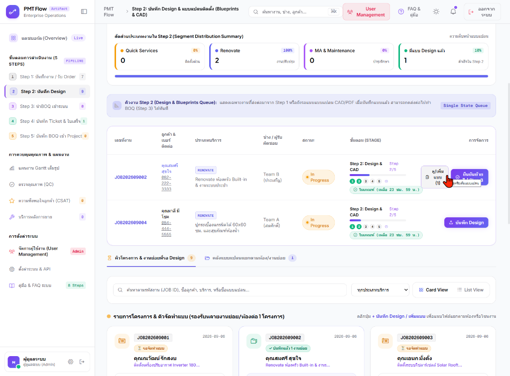

| รหัสหลักสูตร / SOP: | TRN-PMT-STEP02 / SOP-PMT-002 | ชื่อระบบ: | PMT Flow Enterprise Operations |
| โมดูล / ขั้นตอน: | Step 2: บันทึก Design & แบบแปลน (Blueprints & CAD) | เวอร์ชันสถาปัตยกรรม: | v2.0 (Pipeline Architecture & Multi-Zone Support) |
| กลุ่มเป้าหมายผู้เรียน: | สถาปนิก, มัณฑนากร, วิศวกรโครงการ, เจ้าหน้าที่ถอดแบบ & BOQ, Trainer | สภาพแวดล้อม Production: | https://vibepmt.online |
คู่มือฉบับมาตรฐานสำหรับวิทยากรผู้ฝึกอบรม (Trainer) และผู้ใช้งานระบบ ในการทำความเข้าใจโครงสร้างหน้าจอ ปุ่มควบคุม แดชบอร์ดวิเคราะห์ผล และขั้นตอนการปฏิบัติงานของศูนย์กลางงานออกแบบและแบบแปลนติดตั้ง (Step 2)

หน้าจอ Step 2 (บันทึก Design) ทำหน้าที่เป็น "Engineering & Design Hub" ของระบบ PMT Flow มีหน้าที่รับช่วงต่องานที่เปิดรับมาจาก Step 1 เพื่อ:
.dwg, .dxf), เอกสารแบบแปลน (.pdf) และภาพ 3D Perspective/ภาพสเก็ตช์| ขั้นตอน (Pipeline Stage) | ตัวเลขในภาพ | คำอธิบายสถานะและการเชื่อมโยง |
|---|---|---|
| Step 1: บันทึกงาน / รับ Order | 7 | งานที่เพิ่งเข้ามาจากระบบขายหน้าร้าน/INT และรอการกดรับเข้าสู่ระบบ |
| Step 2: บันทึก Design | 9 (Active) | หน้าจอปัจจุบัน คิวโครงการที่อยู่ในมือทีมออกแบบเพื่อจัดทำแบบแปลน |
| Step 3: นำ BOQ เข้าระบบ | 0 | คิวงานที่รอถอดรายการวัสดุและค่าแรงจากแบบแปลนที่ส่งมาจาก Step 2 |
| Step 4: บันทึก Ticket & ใบเสร็จ | 1 | งานที่กำลังดำเนินการชำระเงินและออกใบเสร็จรับเงิน |
| Step 5: บันทึก BOQ เข้า Project | 0 | งานที่แปลงรายการ BOQ เข้าสู่แผนงาน Gantt Timeline |
แถบแดชบอร์ดด้านบนช่วยให้หัวหน้าทีมทราบปริมาณและสัดส่วนประเภทงานที่อยู่ในคิว Step 2 ทันที:
| หมวดหมู่งาน | จำนวน & % | ความสำคัญในกระบวนการ Design |
|---|---|---|
| Quick Services (ติดตั้งด่วน) | 0 รายการ (0%) | งานติดตั้งด่วน เช่น แอร์ หรือปั๊มน้ำ มักใช้แบบมาตรฐานและ Fast-track ข้ามไปได้เร็ว |
| Renovate (งานปรับปรุง) | 2 รายการ (100%) | กลุ่มงานหลักในคิวปัจจุบัน: งานครัว Built-in, งานระบบประปา, ปูกระเบื้อง ซึ่งต้องมีแบบแปลนเฉพาะหน้างานชัดเจน |
| MA & Maintenance (บำรุงรักษา) | 0 รายการ (0%) | งานสัญญาบำรุงรักษาเชิงป้องกัน |
| มีแบบ Design แล้ว (ความคืบหน้า) | 1 รายการ (10%) | ความคืบหน้าของงานที่มีแบบแปลนแล้วและพร้อมส่งต่อเข้าสู่ Step 3 |
ใช้สถาปัตยกรรม Single State Queue แสดงเฉพาะงานที่ต้องดำเนินการใน Step 2 เพื่อลดความซับซ้อนของผู้ใช้งาน:
| รหัสงาน | ลูกค้า & บริการ | สถานะ & SLA | ปุ่มการจัดการ (Action) | ผลการกดปุ่ม |
|---|---|---|---|---|
| JOB202609002 | คุณสมศรี สุขใจ RENOVATE ครัว Built-in & ท่อประปา |
In Progress ✓ ในเกณฑ์ (เหลือ 23 ชม. 59 น.) |
ดู/เพิ่มแบบ (1) ยืนยันย้ายไป Step 3 | มีแบบแล้ว 1 โซน เมื่อกดปุ่มสีม่วง ยืนยันย้ายไป Step 3 จะเปิดหน้าต่างสรุปเพื่อส่งงานต่อไปยังคิวทำ BOQ ทันที |
| JOB202609004 | คุณมาลี มีโชค RENOVATE ปูกระเบื้อง 60x60 & สุขภัณฑ์ |
In Progress ✓ ในเกณฑ์ (เหลือ 23 ชม. 59 น.) |
บันทึก Design | ยังไม่มีแบบแปลน เมื่อกดปุ่มนี้จะเปิดหน้าต่างอัปโหลดแบบแปลนเพื่อแนบไฟล์แบบฉบับแรก |
+ เพิ่มงานย่อย/ห้อง) ให้กับงานที่มีหลายโซนบันทึก Design หรือ + เพิ่มงานย่อย/ห้อง เพื่อแนบไฟล์แบบ PDF/CAD พร้อมระบุโซนห้องและเวอร์ชันยืนยันย้ายไป Step 3 เพื่อส่งงานต่อให้ฝ่ายทำราคา
JOB202609002 อธิบายว่ามีปุ่ม ดู/เพิ่มแบบ (1) และปุ่ม ยืนยันย้ายไป Step 3 ให้ลองกดปุ่มยืนยันเพื่อดู Modal สรุปรายการแบบJOB202609004 ที่ยังไม่มีแบบ ให้กดปุ่ม บันทึก Design จากนั้นคลิกปุ่มตัวอย่างด่วน [แบบครัว Built-in] เพื่อสาธิตการดึงแบบมาตรฐานมาใช้งานได้ภายใน 3 วินาที| คำถาม | คำตอบและแนวทางปฏิบัติ |
|---|---|
| กดย้ายไป Step 3 แล้ว ยังแก้ไขหรือเพิ่มแบบได้หรือไม่? | ได้ตลอดเวลา: สถาปนิกสามารถกลับมาที่ Step 2 เพื่อกด + เพิ่มงานย่อย/ห้อง หรืออัปเดตเวอร์ชันใหม่ได้ ระบบจะซิงค์ข้อมูลไปยัง Step 3 โดยอัตโนมัติ |
| ช่างหน้างานจะดูแบบแปลนนี้จากที่ไหน? | ไฟล์แบบแปลนทั้งหมดจะเชื่อมโยงไปยังหน้า รายละเอียดงาน (Job Detail) และระบบช่างหน้างาน ช่างสามารถเปิดดูไฟล์ PDF หรือรูปภาพความละเอียดสูงบนมือถือหรือแท็บเล็ตได้ทันที |
| SLA 24 ชั่วโมงเริ่มนับตั้งแต่ตอนไหน? | เริ่มนับทันทีที่มีการกดยืนยันรับงานเข้าสู่ PMT ใน Step 1 หากใกล้ครบกำหนดระบบจะแสดงแถบแจ้งเตือนสีส้ม และหากเกินกำหนดจะเปลี่ยนเป็นสีแดง |
คู่มือการฝึกอบรมระบบ PMT Flow Enterprise Operations | ปรับปรุงล่าสุด: กันยายน 2026
เอกสารสำหรับใช้งานภายในองค์กรและฝึกอบรมบุคลากร